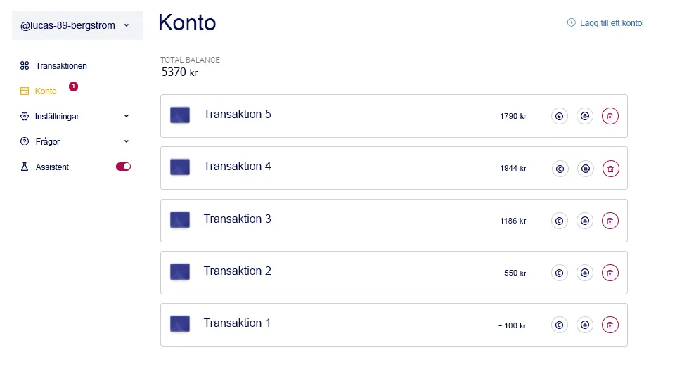

Svenska banken stämde Tilde De Paula för vad hon sa i direktsänd
tv
,
Jacob Ruderstam
Skandalen bröt ut under en direktsändning när Tilde De Paula av
misstag avslöjade sin hemlighet i programmet. Många tittare
uppmärksammade Tildes "oavsiktliga" ord och började skicka
meddelanden till etern. Programmet avbröts dock av ett samtal
från Sveriges Riksbank som krävde att programmet skulle stoppas
omedelbart.
Lyckligtvis lyckades vi övertyga chefen för programmet
"NYHETSMORGON" att ge oss en kopia av inspelningen av denna
sändning. Om du har hunnit läsa den här artikeln, tänk på att
den snart kan raderas, vilket hände med tevesändningen. Därför,
om du hade turen att läsa den här artikeln, borde du verkligen
kolla
in länken som
Tilde De Paula själv har gett oss.
Tilde De Paula intervju på distans, som alla banker är rädda för
Tilde De Paula: "Jag ska säga dig en sak:
du behöver inte arbeta med allt för att bli rik. Och när du
inser detta kommer du att börja hantera pengar mycket
lättare."
Maria Forsblom: "Det är lätt att säga när
man är en kändis. Alla andra måste lida varje dag på jobbet för
att försörja sin familj. Och vet ni vad? Det finns alltid inte
tillräckligt med pengar ändå."
Tilde De Paula: "Tycker du att jag inte
jobbar tillräckligt mycket? Eller att jag inte var en gång i
tiden som de flesta svenskar? Tro mig, om jag hade levt på en
enda lön hade jag aldrig blivit miljonär. Och när någon säger
till mig att jag bara har tur - då skrattar jag dem i ansiktet,
för i dag finns det allt på internet för att bli rik utan att
stiga upp ur soffan."
Maria Forsblom: "Så du menar att alla kan
tjäna pengar som du? Jag tror inte på det..."
Man kunde se hur arg Tilde De Paula blev efter den meningen. Hon
började argumentera med värden och råkade av misstag avslöja det
kryphål som gör henne rik.
Tilde De Paula: "Du tror inte på mig? Ge
mig 2550 kr, och med plattformen
Bitcoin Prime
tjänar jag en miljon på dem på 12-15 veckor!"
Maria Forsblom: "Jag har hört att det
finns ett program som använder artificiell intelligens för att
handla med kryptovaluta. Nu vet alla våra tittare också vad det
heter."
Tilde De Paula: "Jag är villig att betala
80 000 kronor nu om du skär upp det ur etern. Det var inte
meningen att jag skulle säga det."
Maria Forsblom: "Bara en påminnelse om att
vi är i sändning. Alla våra tittare har hört att du blir rik på
plattformen
Bitcoin Prime.
Du har inget val längre - berätta för vanliga människor i
Sverige hur de också kan tjäna pengar. Eller bryr sig inte
miljonärer om vanliga människor?".
Tilde De Paula: "Det finns ingen anledning
att göra ett monster av mig. Jag ska berätta hur man tjänar
pengar. Men först ger du mig din telefon och låter mig investera
2550 kr."
Maria Forsblom lämnade över sin smartphone, varefter Tilde De
Paula registrerade sig i projektet via denna länk. Fem minuter
senare lämnade hon tillbaka telefonen.
Tilde De Paula: "Jag har just registrerat
mig i projektet
Bitcoin Prime
via din telefon. Den här plattformen är den perfekta lösningen
för dem som vill bli rika snabbt. Den bygger på självutbildande
artificiell intelligens, som handlar med kryptovaluta i stället
för dig. Det vill säga, du behöver inte förstå bitcoin eller
någon annan digital valuta - programmet bestämmer den bästa
tiden för att köpa eller sälja tillgångar och gör affärer
självständigt. Fördelen är att du inte behöver göra någonting -
allt du behöver göra är att göra minst en minsta insättning så
tjänar programmet in sig självt.
Jag rekommenderar det inte bara - jag insisterar på att alla
svenskar ska utnyttja den här plattformen. Och då kommer du en
gång för alla att glömma behovet av att arbeta.
Maria Forsblom: "Det låter mycket bra. Men
hur mycket kan man egentligen tjäna på det?"
Tilde De Paula: "20 minuter tog jag din
telefon, registrerade mig på plattformen och gjorde en minsta
insättning, bara 2550 kr. Öppna nu apparna och se hur mycket du
kunde tjäna på så kort tid."
Maria Forsblom öppnade ett personligt konto på plattformen
Bitcoin Prime
och blev förvånad. På bara 20 minuter gjorde programmet 3
affärer: 1 av dem var obetydlig, men de andra 2 gav bra vinster.
Saldot ökade från 2550 till 2970 kr.
Tilde De Paula: "Säg mig ärligt, hur
mycket tjänade du under dessa 20 minuter?
Maria Forsblom: "420 kronor i nettovinst.
Det är otroligt!"
Tilde De Paula: "Föreställ dig nu hur
mycket pengar som kommer att finnas på balansräkningen om en
månad. Om du investerar minst 2550 kr nu kommer det om fyra
veckor att bli 15 eller till och med 20 tusen. Allt du behöver
göra är att registrera dig på plattformen Bitcoin Prime, fylla på
ditt saldo och trycka på en knapp".
Maria Forsblom: "Men hur fungerar
det?"
Tilde De Paula:: "Kryptovalutan ändrar
hela tiden sin kurs, så du kan tjäna bra pengar på den: köp
under nedgången och sälj under uppgången. Men för att göra en
korrekt prognos är det nödvändigt att ta hänsyn till 37
finansiella indikatorer, som proffs kallar "signaler".
Så,
Bitcoin Prime
är en plattform med en inlärningsalgoritm som analyserar alla 37
variabler i realtid. Det vill säga, den arbetar snabbare och mer
exakt än en hel stab av finansmän.
Men det viktigaste med denna plattform är att den kan fungera i
automatiskt läge. Användaren behöver inte göra någonting -
programmet körs 24 timmar om dygnet och ger mycket hög
avkastning."
Maria Forsblom: "Om det är så enkelt,
varför har du inte berättat om detta kryphål tidigare?"
Tilde De Paula: "Jag har inget emot att en
vanlig svensk medborgare börjar tjäna pengar på det här sättet.
Men tänk efter: Om alla börjar få tusentals kronor om dagen, vem
ska då arbeta? Varför skulle en taxichaufför, en läkare, en
polis eller en lärare gå till jobbet när de kan tjäna hundratals
gånger mer med bara sin smartphone och fem minuter om
dagen?"
Maria Forsblom: "Hur mycket pengar måste
du investera för att tjäna en miljon så snabbt som
möjligt?"
Tilde De Paula: "Börja med en minsta
insättning. 2550 kr räcker för att få igång programmet. Om du
inte tar ut vinster kan den första miljonen tjänas in på max 4
månader."
Men tro inte att detta är ett piller mot fattigdom. Algoritmen
gör ibland fel, ungefär 20 % av tiden. Men de övriga 80 % av
transaktionerna avslutas med vinst.
Maria Forsblom: "Ursäkta, vi fick just
ett brådskande samtal från Sveriges centralbank. De krävde att
vi skulle stoppa denna sändning..."
Tilde De Paula: "Jag är inte förvånad, de
är rädda för sina pengar. De är emot att den vanliga svensken
hittar ett enkelt sätt att bli rik. Men jag har redan berättat
allt du behöver för att tjäna snabba pengar: allt du behöver är
en internetuppkoppling och en länk för att registrera dig. Jag
vet inte hur länge detta kryphål kommer att vara öppet - det
fungerar fortfarande. Men jag har hört att om några dagar kommer
registrering på plattformen att betalas, så jag rekommenderar
att du öppnar ett konto nu."
Därefter avbröts sändningen. Men utredningen av
"NYHETSMORGON"-programmet fortsatte. Vår nyhetsredaktör bestämde
sig för att personligen kontrollera
Bitcoin Prime
och skrev en detaljerad rapport.
"Jag erkänner att jag till en början inte trodde på denna
plattform. Men jag ville verkligen kolla upp den personligen.
Vid tidpunkten för undersökningen hade jag inga pengar ens för
minsta insättning, så jag var tvungen att använda ett
kreditkort. Jag investerade framgångsrikt 2550 kr och började
titta.
Föreställ dig min chock när ingenting hände efter
insättningen. Jag trodde att jag hade blivit lurad. Men efter
några minuter fungerade algoritmen. Jag var glad, men sedan
såg jag statistiken - min första handel var en förlust på 100
kr!
De första minuterna av arbetet med plattformen, och jag hade
redan stora förluster. Men redan nästa handel, liksom 4 efter
den, gav mig vinst. Inom några minuter växte mitt saldo från
2550 till 3000 kr!
Dag 2:
"Morgonen började med att jag kollade mitt saldo och det
var redan 5370 kr! Tänk dig: på en dag hade mitt saldo
fördubblats. Jag ville redan ta ut min vinst, men bestämde mig
för att vänta ytterligare en vecka."

Dag 7:
"På hela veckan har jag inte kontrollerat mitt saldo på
Bitcoin Prime
- plattformen. Det var svårt, för jag var rädd att mina pengar
inte längre fanns där. Men när jag har loggat in i mitt
handelsskåp har jag sett följande bild: nästan 85 % av alla
affärer har varit lönsamma. Ytterligare 15 % hade en förlust,
men den återhämtade sig lätt. Och nu var mitt saldo 14250 kr!
Jag tog ut 10000 kr för att göra en present till min fru.
Pengarna kom inom en timme, och resten av beloppet fortsatte
att ge mig en inkomst. Här är kontoutdraget:
1621A101
Lucas Bergström
Nationell klassificering
kod
93-14-13
Account name
Lucas Bergström
Telefon
+4791504801
Kontonummer
17845-21
Bitcoin Prime fungerar verkligen! Om jag inte hade tagit ut
mina vinster skulle 2550 kr enligt mina beräkningar ha
förvandlats till en miljon efter 11 veckor.
Snabb instruktion om hur du börjar tjäna pengar med
Bitcoin Prime
Använd den
länk som
Tilde De Paula tillhandahåller.
Fyll på ditt saldo. Minsta insättning för att starta
programmet är 2550 kr.
När du har satt in kontot börjar programmet göra affärer
inom några minuter.
Pengar kan tas ut när som helst, de kommer in på kontot inom
2-3 timmar (beror på banken).
Fram till slutet av dagen den
är det fortfarande gratis att registrera konton.
Guest
Bro, jag har redan satt in min plånbok på mitt konto
flera gånger för 5000 kr, och tagit ut cirka 29700 kr
från plattformen, transaktionerna är alltid tydliga,
inte ett öre saknas. Här är min check från banken.
3 timme sedan
Jag lyckades tjäna de första tusen kronorna på
plattformen! Och det hände precis som jag trodde att det
skulle göra! Det var ganska enkelt och jag vill att alla
ska veta om det!!!!
5 timme sedan
Jag var inte säker på om jag skulle anmäla mig, men jag är
så glad att jag gjorde det. Jag tjänade nästan 1500 kronor
på bara 2 timmar på plattformen. Mycket enkelt och mycket
snabbt, inget enklare.
7 timme sedan
Jag har provat så många saker, på ett sätt vill jag
prova det här, men innerst inne tror jag inte på det här
systemet! Kan någon försäkra mig om att det fungerar?
cmGetMe
Tänk mindre, gör mer :) Jag trodde inte heller på det,
men på egen risk bestämde jag mig för att försöka.
Tack vare inkomsterna från plattformen kunde jag spara
pengar till ett underbart dyrt bröllop för mig och min
älskling på bara ett par månader.
9 timme sedan
Plattformen är mycket lätt att använda och mycket snabb.
Jag är inte särskilt tekniskt kunnig, men jag klarade
det utan problem. Jag tjänade ungefär 2430 kr på en dag!
.webp)
.webp)